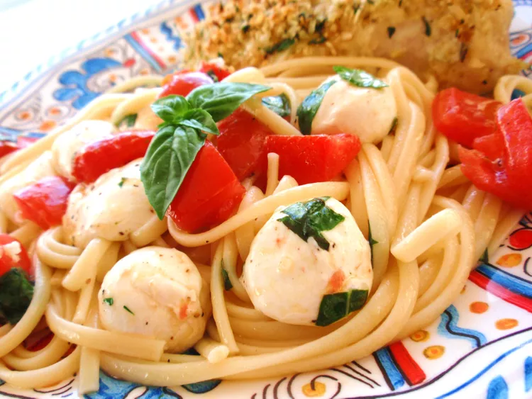

Tony's Summer Pasta Recipe

Source Link:
Recipe Title
Description
Tony's Summer Pasta. The tomatoes and cheese are marinated in oil, basil, and garlic, and then tossed with the hot linguine. The tomatoes are warmed and the cheese melts ever so slightly, creating a simple but delectable meal.
Ingredients
- linguini pasta
- tomatos, chopped
- mozzarella cheese
- fresh basil
- garlic
- olive oil
- garlic salt
- ground black pepper
Steps
- Combine tomatoes, cheese, basil, garlic, olive oil, garlic salt, and black pepper in medium bowl. Set aside.
- Meanwhile, cook pasta according to package directions.
- Drain pasta, and transfer to a serving bowl. Toss with tomato mixture. Serve.
Links to more recipes: